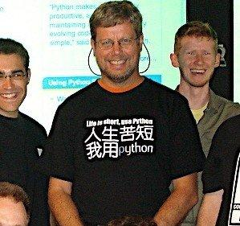

为什么学Python数据分析？
为什么是Python?
Python正当红：是现在最流行的编程语言之一
Life is short. You need Python.

PYPI编程语言流行榜
依据GOOGLE搜索排名：http://pypl.github.io/PYPL.html
TIOBE编程语言排行榜 TOP榜单
综合排名：https://www.tiobe.com/tiobe-index/
作为一名职业程序员应该使用什么语言？
Google面试标准语言选择：三大语言
- Python
- C++
- Java
- （JS）
各主流编程语言发明时间
* 1957 – FORTRAN (第一个编译型语言)
* 1972 – C
* 1980 – C++
* 1991 – Python
* 1993 – Ruby
* 1995 – Java
* 1995 – JavaScript
* 1995 – PHP
* 2001 – C#
* 2001 – Visual Basic .NET
* 2009 – Go
为什么流行？第三次人工智能浪潮的兴起
Python最近这次大流行的原因，是借人工智能兴起的东风
Python是人工智能领域最主流的编程语言，没有之一
- 国外：2012年，ImageNet大规模视觉识别挑战赛
- 在斯坦福教授李飞飞主持的ImageNet大规模视觉识别挑战赛（ILSVRC）上，多伦多大学教授Geoff Hinton团队使用深度卷积神经网络在识别图像正确率上实现突破，2015年后机器识别正确率超越人类（5%）。
- 国内：2016年3月，AlphaGo与李世石人机大战获胜
- DeepMind创始人Demis Hassabis的AlphaGo与围棋职业九段李世石人机大战，以4比1的总比分获胜，自此人工智能在国内大火
为什么学数据分析？
为了就业：
Web后端开发
网络爬虫***
数据分析***
软件开发数据分析是完全不同的两个行业，代表了完全不同的两种世界观
为了认识世界，认识自己
人类存在的目的是什么？（人活着是为了什么？）
**认识世界**：数据分析
**改造世界**：软件工程
乔布斯，王阳明：知行合一
鸡生蛋，蛋生鸡！哪个更重要？
- 改变世界最重要：
- 软件开发，创造者
- 努力，奋斗，改变世界，改变自己
- 认识世界最重要：
- 如果你已通过奋斗拥有一切，你会做什么？
- 静静的观察，和体验这个世界
- 数据分析：观察，理解，更深的体验
一种新思想：
* 笛卡尔：我思故我在
* 你看世界的角度，决定了你的存在
* “我”是世界之王，除我之外一切都不存在
（光的波粒二象性证明世界是虚拟的）
- 一种人喜欢激烈的奋斗
- 战天斗地，功成名就，改变世界，改变自己
- 另一种人喜欢静静的欣赏，和体验
- 从不同角度观察和理解世界，理解自己
你是哪种人？